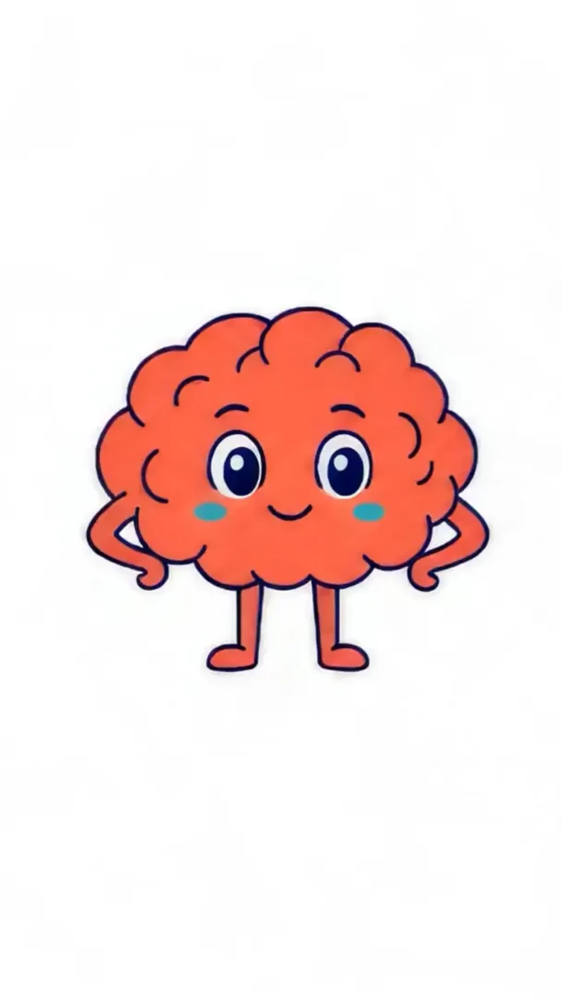
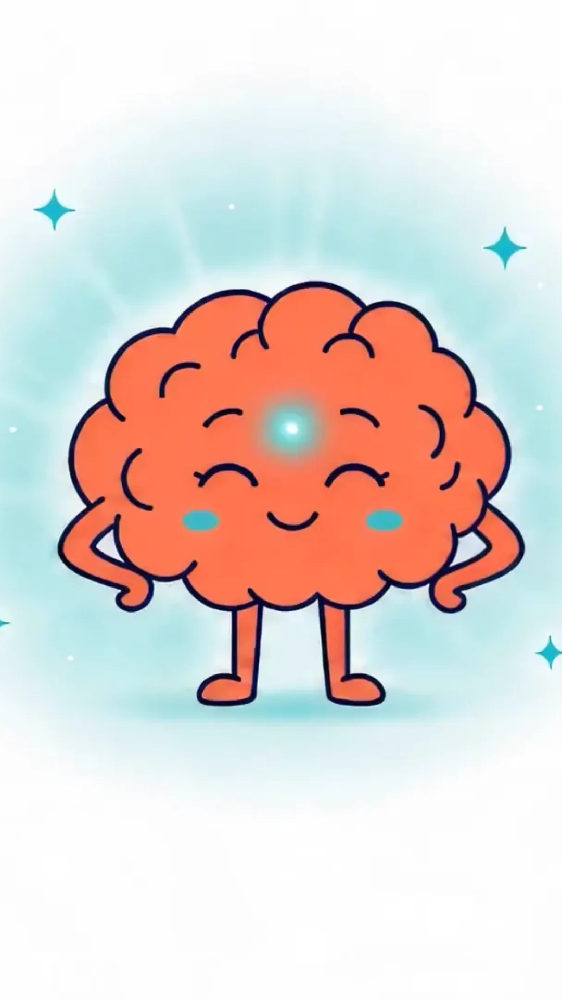

Clip 01 · highest impact
Vertical hero — the full story in 9:16
A portrait re-render of the master film, same four beats: calm brain → document swarm → lightbulb → capptions absorbs the chaos, teal calm. Today mobile uses a center crop of the landscape film; a native vertical render keeps the swarm icons in frame.
Start frame: m-vertical-start.webp · End frame: m-vertical-end.webp Flat 2D vector illustration, vertical 9:16. A cute coral cartoon brain character stands centered on a clean paper-white background. Beat 1 (0–1s): calm, small smile. Beat 2 (1–4.5s): paper documents, clipboards, folders, warning triangles and gears fly in from above and below, swirling around the brain; the brain looks anxious, red stress squiggles pulse around it. Beat 3 (4.5–6.5s): a lightbulb with a round coral logo inside pops up above the brain; the brain raises one finger, surprised. Beat 4 (6.5–10s): the lightbulb becomes a round coral logo at the lower third; all documents stream smoothly into it; the brain relaxes, closes its eyes, smiles, a soft teal aura glows around it with teal sparkles. Flat colors, thick navy outlines, no motion blur, no text.

